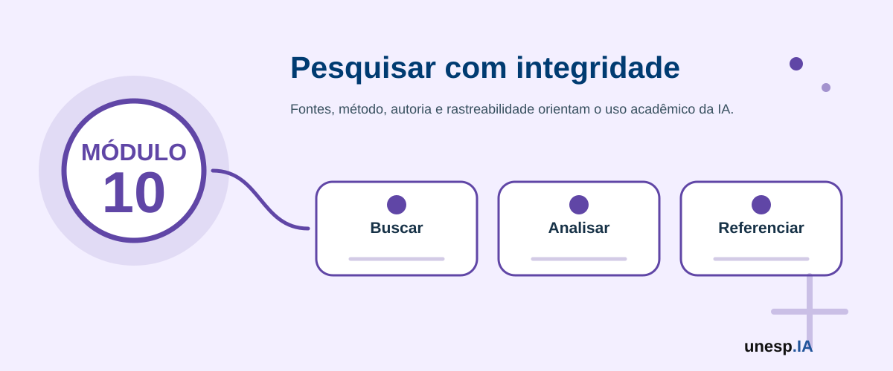

Inteligência Artificial para Pesquisa Científica e Produção Acadêmica
Ferramentas relacionadas neste módulo

Apresentação
A Inteligência Artificial pode apoiar diferentes etapas da pesquisa científica e da produção acadêmica, desde a organização de ideias iniciais até a leitura de documentos, busca de referências, síntese de literatura, planejamento de projetos, elaboração de resumos, estruturação de artigos, revisão de textos, análise preliminar de dados e preparação de apresentações.
No entanto, o uso da IA na pesquisa exige responsabilidade, ética, transparência, autoria, integridade acadêmica e verificação rigorosa das informações. A IA pode apoiar o pesquisador, mas não substitui leitura crítica, domínio teórico, método científico, análise humana, validação de fontes, orientação acadêmica e responsabilidade intelectual.
O Módulo 10 – Inteligência Artificial para Pesquisa Científica e Produção Acadêmica tem como objetivo capacitar participantes para utilizar ferramentas de IA de forma crítica e responsável no apoio à pesquisa, escrita acadêmica, organização de literatura, leitura de documentos e produção científica.
1. Organização do Módulo
Carga horária total
16 horas.
Público recomendado
Pesquisadores, docentes, estudantes de graduação, pós-graduandos, orientandos, bolsistas de iniciação científica, profissionais envolvidos com produção científica e participantes interessados em utilizar IA no apoio à leitura, organização, escrita e comunicação acadêmica.
Objetivo geral
Capacitar participantes para utilizar Inteligência Artificial no apoio à pesquisa científica e à produção acadêmica, incluindo busca e organização de literatura, leitura de documentos, síntese de informações, estruturação de projetos, escrita acadêmica, revisão textual, apresentação de resultados e uso ético da IA na ciência.
Competências desenvolvidas
Ao final do módulo, espera-se que o participante seja capaz de:
- compreender possibilidades e limites da IA na pesquisa científica;
- utilizar IA para organizar ideias de pesquisa;
- elaborar perguntas de pesquisa com apoio de IA;
- buscar, organizar e sintetizar literatura científica;
- utilizar ferramentas como NotebookLM, Perplexity, Elicit, Consensus e Scite;
- resumir artigos e documentos acadêmicos com cautela;
- construir mapas conceituais e quadros de síntese;
- apoiar a escrita de projetos, resumos, introduções e objetivos;
- revisar clareza, coesão e estrutura textual;
- preparar apresentações acadêmicas com apoio de IA;
- reconhecer riscos de alucinação, referências falsas e uso inadequado;
- compreender cuidados com autoria, plágio, integridade científica e transparência;
- produzir uma síntese estruturada de literatura, mapa conceitual ou esboço de projeto acadêmico com apoio de IA.
2. Estrutura das Unidades
| Unidade | Tema | Carga horária |
|---|---|---|
| Unidade 10.1 | IA na pesquisa científica: possibilidades, limites e integridade | 2h |
| Unidade 10.2 | IA para definição de tema, problema, objetivos e perguntas de pesquisa | 3h |
| Unidade 10.3 | IA para busca, leitura e organização da literatura científica | 3h |
| Unidade 10.4 | IA para síntese, fichamento, mapas conceituais e quadros comparativos | 3h |
| Unidade 10.5 | IA para escrita acadêmica, revisão textual e comunicação científica | 3h |
| Unidade 10.6 | Laboratório final: síntese de literatura ou esboço de projeto acadêmico | 2h |
| Total | 16h |
A sequência pedagógica segue a lógica:
ética e limites → tema e problema → busca e leitura → síntese → escrita e comunicação → produto acadêmico final
Unidade 10.1 – IA na pesquisa científica: possibilidades, limites e integridade
Carga horária
2 horas
Objetivo da unidade
Apresentar as possibilidades de uso da IA na pesquisa científica, discutindo limites, riscos, integridade acadêmica, autoria, transparência e responsabilidade do pesquisador.
Situação de abertura
Uma estudante precisa começar seu TCC, mas não sabe como delimitar o tema.
Um mestrando tem dezenas de artigos para ler.
Uma professora quer organizar uma revisão de literatura.
Um pesquisador precisa preparar uma apresentação para congresso.
Um orientando pede à IA para escrever uma seção inteira sem conferir as fontes.
A IA pode ajudar em várias tarefas, mas seu uso inadequado pode comprometer a qualidade e a integridade da pesquisa.
Conceitos principais
IA na pesquisa científica
É o uso de ferramentas inteligentes para apoiar atividades como:
- geração de ideias;
- organização de temas;
- busca de literatura;
- leitura de documentos;
- síntese de textos;
- revisão textual;
- análise exploratória;
- organização de referências;
- elaboração de apresentações;
- planejamento de projetos.
Integridade científica
Integridade científica significa conduzir pesquisa com honestidade, transparência, rigor, responsabilidade e respeito às normas acadêmicas.
Autoria
Autoria envolve responsabilidade intelectual pelo conteúdo produzido. A IA pode apoiar a escrita, mas não deve ser tratada como autora acadêmica.
Transparência no uso de IA
Quando a IA for utilizada em atividades acadêmicas, é importante seguir as normas da instituição, do periódico, do evento ou do orientador, declarando o uso quando necessário.
O que a IA pode fazer na pesquisa?
A IA pode apoiar:
- brainstorming (tempestade de ideias) de temas;
- organização de perguntas;
- explicação de conceitos;
- resumo inicial de textos;
- comparação de abordagens;
- criação de quadros;
- revisão de clareza;
- tradução inicial;
- adaptação de linguagem;
- criação de roteiros de apresentação.
O que a IA não deve fazer?
A IA não deve:
- inventar referências;
- substituir leitura dos artigos;
- escrever trabalho inteiro sem autoria do estudante;
- gerar citações sem conferência;
- fabricar dados;
- interpretar resultados sem validação;
- substituir orientação acadêmica;
- decidir metodologia sem análise humana;
- apresentar conteúdo como verdade sem verificação.
Riscos comuns
- alucinação;
- referências inexistentes;
- citações falsas;
- erros conceituais;
- generalizações;
- plágio;
- dependência excessiva;
- perda de autoria;
- uso de dados sigilosos;
- violação de direitos autorais;
- leitura superficial da literatura.
Na pesquisa acadêmica, uma resposta bem escrita não é necessariamente uma resposta correta. Toda informação precisa ser conferida em fonte confiável.
Analise as situações:
- Usar IA para sugerir palavras-chave.
- Usar IA para inventar referências.
- Usar IA para revisar clareza de um texto próprio.
- Usar IA para substituir leitura de artigos.
- Usar IA para organizar fichamentos.
- Usar IA para fabricar resultados.
Classifique como uso adequado, uso com cuidado ou uso inadequado.
Atividade guiada – Mapa de usos responsáveis da IA na pesquisa
Objetivo
Identificar usos adequados, cuidados e usos inadequados da IA na pesquisa científica.
Passo a passo
- O instrutor apresenta situações de uso da IA.
- Os participantes classificam cada situação.
- Para cada situação, indicam:
- benefício;
- risco;
- cuidado necessário;
- forma de validação.
- A turma constrói um quadro coletivo.
- O grupo elabora princípios de uso responsável.
Quadro: Usos responsáveis da IA na pesquisa científica.
A IA pode acelerar tarefas acadêmicas, mas como garantir que ela não reduza o rigor, a autoria e a profundidade da pesquisa?
Unidade 10.2 – IA para definição de tema, problema, objetivos e perguntas de pesquisa
Carga horária
3 horas
Objetivo da unidade
Capacitar os participantes para utilizar IA no apoio à delimitação de tema, formulação de problema de pesquisa, objetivos, justificativa inicial e perguntas investigativas.
Situação de abertura
João quer pesquisar Inteligência Artificial na educação, mas o tema está muito amplo.
Ana deseja estudar evasão escolar, mas ainda não sabe transformar o interesse em problema de pesquisa.
Carlos quer desenvolver um projeto sobre pequenos negócios, mas precisa definir objetivo e escopo.
Uma orientanda tem muitas ideias, mas não sabe organizá-las.
A IA pode ajudar a organizar possibilidades, mas a delimitação científica exige leitura, orientação e análise crítica.
Conceitos principais
Tema
É a área geral de interesse.
Exemplo:
Inteligência Artificial na educação.
Delimitação
É o recorte específico do tema.
Exemplo:
Uso de IA generativa por professores do ensino médio no planejamento de aulas.
Problema de pesquisa
É a pergunta central que orienta a investigação.
Exemplo:
Como professores do ensino médio utilizam IA generativa no planejamento de aulas?
Objetivo geral
Expressa o propósito principal da pesquisa.
Exemplo:
Analisar o uso de IA generativa por professores do ensino médio no planejamento de aulas.
Objetivos específicos
Detalham etapas da pesquisa.
Exemplos:
- identificar ferramentas utilizadas;
- descrever práticas pedagógicas apoiadas por IA;
- analisar benefícios percebidos;
- mapear riscos e desafios.
Justificativa
Explica a relevância do estudo.
Como a IA pode ajudar?
A IA pode apoiar:
- geração de ideias de tema;
- delimitação de escopo;
- formulação de perguntas;
- comparação de recortes;
- criação de objetivos;
- estruturação de justificativa inicial;
- identificação de palavras-chave;
- organização de hipóteses;
- sugestão de métodos possíveis.
Exemplos de prompts (instruções para a IA)
Delimitação de tema
Tenho interesse em pesquisar [tema amplo]. Sugira cinco recortes mais específicos, indicando público, contexto, problema e possível contribuição.
Problema de pesquisa
A partir do tema [tema], proponha três problemas de pesquisa em formato de pergunta, adequados para um TCC ou iniciação científica.
Objetivos
Transforme o seguinte problema de pesquisa em objetivo geral e quatro objetivos específicos: [problema].
Justificativa
Ajude-me a estruturar uma justificativa inicial para uma pesquisa sobre [tema], considerando relevância social, acadêmica e prática.
Palavras-chave
Sugira palavras-chave em português e inglês para pesquisar literatura sobre [tema].
A IA pode gerar várias alternativas de problema e objetivo. O pesquisador deve escolher, ajustar e validar com base em:
- viabilidade;
- tempo disponível;
- acesso a dados;
- relevância;
- originalidade;
- orientação;
- literatura existente;
- método adequado.
Problemas e objetivos gerados por IA podem ficar genéricos, amplos ou inviáveis. É necessário revisar e delimitar.
Escolha um tema de interesse e peça à IA:
- cinco recortes possíveis;
- três problemas de pesquisa;
- um objetivo geral;
- quatro objetivos específicos;
- palavras-chave.
Depois selecione a proposta mais viável e justifique.
Atividade guiada – Canvas de pesquisa com IA
Objetivo
Criar um primeiro esboço de tema, problema, objetivos e justificativa com apoio de IA.
Passo a passo
- Escolher um tema amplo.
- Pedir à IA sugestões de recorte.
- Selecionar um recorte.
- Formular problema de pesquisa.
- Pedir sugestões de objetivo geral.
- Pedir objetivos específicos.
- Solicitar palavras-chave.
- Criar uma justificativa inicial.
- Revisar escopo, clareza e viabilidade.
- Registrar versão final.
Modelo de canvas
Tema amplo:
Recorte escolhido:
Contexto:
Público ou objeto de estudo:
Problema de pesquisa:
Objetivo geral:
Objetivos específicos:
Palavras-chave:
Justificativa inicial:
Viabilidade:
Canvas inicial de pesquisa com apoio de IA.
A IA pode sugerir caminhos de pesquisa, mas quem deve decidir o recorte científico e assumir a responsabilidade pela investigação?
Unidade 10.3 – IA para busca, leitura e organização da literatura científica
Carga horária
3 horas
Objetivo da unidade
Capacitar os participantes para utilizar IA e ferramentas acadêmicas no apoio à busca, leitura, organização e seleção inicial de literatura científica.
Situação de abertura
Ana encontrou muitos artigos, mas não sabe quais são relevantes.
João leu resumos, mas não consegue organizar os principais conceitos.
Carlos encontrou referências sugeridas por IA, mas algumas não existem.
Uma pesquisadora precisa comparar estudos sobre o mesmo tema.
Um orientando quer usar NotebookLM para conversar com PDFs.
A IA pode ajudar, mas a literatura científica exige fontes verificáveis e leitura crítica.
Conceitos principais
Literatura científica
É o conjunto de artigos, livros, teses, dissertações, trabalhos de eventos e documentos acadêmicos relacionados a um tema.
Busca bibliográfica
É o processo de localizar estudos relevantes.
Fonte confiável
É uma fonte verificável, publicada em meio reconhecido, com autoria, data, instituição, periódico, evento ou DOI.
DOI
Identificador digital de publicações científicas.
Referência falsa
Pode ocorrer quando a IA inventa um artigo, autor, título, periódico ou DOI inexistente.
Ferramentas úteis
Google Scholar
Busca ampla de literatura acadêmica.
Portal de Periódicos CAPES
Acesso a bases e periódicos científicos.
SciELO
Biblioteca eletrônica com periódicos científicos, especialmente da América Latina.
Semantic Scholar
Busca acadêmica com recursos de IA.
Perplexity
Busca com respostas e fontes, exigindo verificação.
Elicit
Apoio à busca e organização de estudos.
Consensus
Apoio à busca de evidências em literatura científica.
Scite
Ajuda a verificar como artigos são citados.
NotebookLM
Permite trabalhar com documentos fornecidos pelo usuário, como PDFs e anotações.
Zotero e Mendeley
Gerenciadores de referências.
Como a IA pode apoiar a literatura?
A IA pode ajudar a:
- sugerir palavras-chave;
- traduzir termos de busca;
- criar strings de busca;
- resumir artigos;
- extrair objetivos e métodos;
- comparar estudos;
- organizar fichamentos;
- criar quadros de síntese;
- gerar perguntas sobre textos;
- identificar lacunas iniciais;
- organizar referências.
Exemplo de prompt (instrução para a IA) para busca
Sugira palavras-chave em português e inglês para pesquisar artigos sobre [tema], incluindo sinônimos e termos relacionados.
Exemplo de prompt para string de busca
Crie uma string de busca para bases científicas sobre [tema], usando operadores AND e OR.
Exemplo de prompt para leitura
Com base neste resumo, identifique objetivo, método, dados utilizados, principais resultados e limitações do estudo.
Exemplo de prompt para comparação
Compare os três resumos abaixo em uma tabela com objetivo, método, contexto, resultados e limitações.
Cuidados essenciais
Antes de usar uma referência sugerida por IA, verifique:
- o artigo existe?
- o título está correto?
- os autores existem?
- o periódico ou evento existe?
- há DOI?
- a data está correta?
- a citação corresponde ao conteúdo?
- o texto foi realmente lido?
Nunca coloque uma referência no trabalho apenas porque a IA sugeriu. Referências precisam ser verificadas em bases confiáveis.
Escolha um tema e peça à IA:
- palavras-chave;
- sinônimos;
- termos em inglês;
- string de busca;
- critérios para selecionar artigos.
Depois realize uma busca em base acadêmica real.
Atividade guiada – Organização inicial da literatura
Objetivo
Buscar e organizar referências iniciais sobre um tema.
Passo a passo
- Retomar o tema da Unidade 10.2.
- Gerar palavras-chave com IA.
- Criar string de busca.
- Pesquisar em Google Scholar, SciELO, Semantic Scholar ou CAPES.
- Selecionar três a cinco estudos.
- Verificar dados bibliográficos.
- Registrar título, autores, ano, fonte e link/DOI.
- Criar resumo inicial de cada estudo.
- Organizar em tabela.
Tabela inicial de literatura científica organizada com apoio de IA.
A IA pode ajudar a encontrar textos, mas como saber se uma pesquisa realmente dialoga com o seu problema científico?
Unidade 10.4 – IA para síntese, fichamento, mapas conceituais e quadros comparativos
Carga horária
3 horas
Objetivo da unidade
Capacitar os participantes para utilizar IA na criação de fichamentos, sínteses, mapas conceituais e quadros comparativos, mantendo leitura crítica e fidelidade às fontes.
Situação de abertura
Uma estudante leu cinco artigos, mas não consegue perceber semelhanças e diferenças entre eles.
Um mestrando precisa organizar autores, métodos e resultados.
Uma professora quer criar um mapa conceitual de uma área.
Um pesquisador precisa identificar lacunas nos estudos encontrados.
A IA pode ajudar a organizar a síntese, mas a interpretação final depende do pesquisador.
Conceitos principais
Fichamento
Registro organizado das principais informações de um texto.
Pode conter:
- referência;
- objetivo;
- conceitos principais;
- método;
- resultados;
- contribuições;
- limitações;
- citações importantes;
- relação com a pesquisa.
Síntese
Síntese não é apenas resumo. É a organização das ideias principais de diferentes fontes, mostrando relações, convergências, divergências e lacunas.
Mapa conceitual
Representação visual de conceitos e relações.
Quadro comparativo
Tabela que compara estudos, autores, métodos, contextos, resultados ou limitações.
Como a IA pode ajudar?
A IA pode apoiar:
- criação de fichas de leitura;
- organização de informações;
- comparação de artigos;
- agrupamento por tema;
- identificação de conceitos;
- construção de quadros;
- criação de mapas;
- formulação de sínteses iniciais;
- identificação de possíveis lacunas.
Exemplo de prompt para fichamento
Crie um modelo de fichamento para artigo científico contendo referência, objetivo, método, dados, resultados, limitações, contribuições e relação com minha pesquisa.
Exemplo de prompt para síntese
Com base nos resumos abaixo, organize uma síntese comparando convergências, diferenças, métodos utilizados, limitações e possíveis lacunas.
Exemplo de prompt para quadro comparativo
Organize os estudos abaixo em uma tabela com autor, ano, objetivo, método, contexto, principais resultados e limitações.
Exemplo de prompt para mapa conceitual
Crie uma estrutura textual de mapa conceitual sobre [tema], indicando conceitos principais e relações entre eles.
Um pesquisador pode usar IA para transformar fichamentos individuais em quadro comparativo. Depois, deve reler as fontes e verificar se a síntese representa corretamente os estudos.
A IA pode distorcer o conteúdo de um artigo, especialmente quando trabalha apenas com resumo. Para sínteses importantes, leia o texto completo.
Selecione dois ou três resumos de artigos e peça à IA:
- quadro comparativo;
- convergências;
- diferenças;
- limitações;
- possíveis lacunas.
Depois verifique se a resposta está fiel aos textos.
Atividade guiada – Quadro de síntese da literatura
Objetivo
Criar um quadro de síntese com estudos selecionados.
Passo a passo
- Selecionar três a cinco estudos.
- Criar fichamento simples de cada estudo.
- Pedir à IA uma tabela comparativa.
- Revisar dados bibliográficos.
- Conferir objetivo, método e resultados.
- Identificar convergências e diferenças.
- Listar possíveis lacunas.
- Criar uma síntese textual curta.
- Registrar dúvidas para aprofundamento.
Quadro de síntese da literatura e breve análise comparativa.
Uma boa revisão de literatura é uma coleção de resumos ou uma análise crítica das relações entre os estudos?
Unidade 10.5 – IA para escrita acadêmica, revisão textual e comunicação científica
Carga horária
3 horas
Objetivo da unidade
Capacitar os participantes para utilizar IA no apoio à escrita acadêmica, revisão textual, estruturação de argumentos, adequação de linguagem, preparação de resumos e apresentações científicas.
Situação de abertura
Um estudante tem boas ideias, mas dificuldade para organizar o texto.
Uma pesquisadora quer melhorar a clareza de um resumo.
Um docente precisa adaptar uma apresentação para público não especialista.
Um orientando quer revisar coesão e coerência de uma seção.
Um grupo precisa preparar slides para seminário.
A IA pode apoiar a comunicação científica, mas o conteúdo, os argumentos e a responsabilidade continuam sendo do autor.
Conceitos principais
Escrita acadêmica
É uma forma de comunicação baseada em clareza, rigor, organização, fundamentação e coerência.
Argumentação científica
Envolve apresentar uma ideia, justificar com literatura, explicar método, discutir resultados e reconhecer limites.
Revisão textual
Consiste em melhorar clareza, coesão, coerência, gramática, fluidez e adequação ao público.
Comunicação científica
Inclui artigos, resumos, pôsteres, apresentações, relatórios, projetos e divulgação científica.
Como a IA pode ajudar?
A IA pode apoiar:
- organização de ideias;
- criação de estrutura;
- revisão de clareza;
- melhoria de coesão;
- adaptação de linguagem;
- criação de títulos;
- revisão de resumo;
- preparação de slides;
- criação de roteiro de apresentação;
- tradução inicial;
- simplificação para divulgação científica.
Exemplos de prompts
Estrutura textual
Ajude-me a organizar uma seção de introdução sobre [tema], sugerindo uma sequência lógica de parágrafos.
Revisão de clareza
Reescreva o trecho abaixo com mais clareza e coesão, mantendo o sentido original e sem acrescentar novas informações.
Objetividade
Reduza este resumo para até 250 palavras, mantendo objetivo, método, resultados e contribuição.
Apresentação
Crie uma estrutura de apresentação de 10 minutos sobre este projeto, com título dos slides e fala do apresentador.
Divulgação científica
Reescreva este resumo acadêmico em linguagem acessível para o público geral.
Cuidados com escrita acadêmica
Ao usar IA, verifique:
- a IA acrescentou informação não existente?
- alterou o sentido?
- removeu detalhes importantes?
- criou afirmações sem fonte?
- mudou o tom acadêmico?
- gerou referências falsas?
- manteve autoria?
- respeitou normas da instituição?
Autoria e transparência
O texto final deve refletir o pensamento, a análise e a responsabilidade do autor. A IA pode ajudar na forma, mas não deve substituir o conteúdo intelectual.
Um autor pode escrever um parágrafo inicial e pedir:
“Melhore a clareza e a coesão deste parágrafo, mantendo o sentido original e sem acrescentar novas informações.”
Essa é uma forma mais segura do que pedir:
“Escreva minha introdução completa.”
Evite enviar dados inéditos, informações sigilosas de pesquisa, pareceres, dados de participantes, documentos confidenciais ou resultados não publicados em ferramentas externas sem autorização.
Pegue um parágrafo próprio e peça à IA:
- melhorar clareza;
- reduzir tamanho;
- tornar mais formal;
- transformar em linguagem simples;
- apontar pontos confusos.
Compare as versões e escolha o que realmente melhora o texto.
Atividade guiada – Revisão acadêmica orientada
Objetivo
Revisar e melhorar um texto acadêmico curto com apoio de IA.
Passo a passo
- Escolher um parágrafo, resumo ou descrição de projeto.
- Pedir à IA análise de clareza.
- Solicitar sugestões de melhoria.
- Pedir reescrita sem acréscimo de informações.
- Comparar versão original e revisada.
- Ajustar manualmente.
- Verificar se o sentido foi preservado.
- Registrar mudanças realizadas.
Texto acadêmico curto revisado com apoio de IA.
A IA pode melhorar a escrita, mas como garantir que o texto continue expressando o pensamento do autor?
Unidade 10.6 – Laboratório final: síntese de literatura ou esboço de projeto acadêmico
Carga horária
2 horas
Objetivo da unidade
Integrar os conhecimentos do módulo por meio da produção de uma síntese estruturada de literatura, mapa conceitual ou esboço inicial de projeto acadêmico com apoio de IA.
Situação de abertura
Ao longo do módulo, os participantes discutiram ética, organizaram tema, buscaram referências, sintetizaram literatura e revisaram textos. Agora, o desafio é construir um produto acadêmico inicial que demonstre uso responsável da IA como apoio ao processo científico.
O produto final deve evidenciar leitura crítica, organização das ideias, verificação de fontes e transparência no uso das ferramentas.
Opções de produto final
O participante poderá escolher uma das três opções:
Opção 1 – Síntese estruturada de literatura
Documento curto organizando estudos sobre um tema.
Opção 2 – Mapa conceitual
Representação visual dos principais conceitos e relações de uma área.
Opção 3 – Esboço de projeto acadêmico
Estrutura inicial de pesquisa com tema, problema, objetivos, justificativa e referências iniciais.
Estrutura da síntese de literatura
- tema;
- objetivo da síntese;
- palavras-chave usadas;
- bases consultadas;
- estudos selecionados;
- quadro comparativo;
- convergências;
- divergências;
- lacunas;
- referências verificadas.
Estrutura do mapa conceitual
- conceito central;
- conceitos relacionados;
- relações entre conceitos;
- exemplos;
- autores ou referências principais;
- questões em aberto.
Estrutura do esboço de projeto
- título provisório;
- tema;
- problema de pesquisa;
- objetivo geral;
- objetivos específicos;
- justificativa;
- metodologia inicial;
- palavras-chave;
- referências iniciais verificadas;
- limitações;
- próximos passos.
Atividade prática – Produto acadêmico com apoio de IA
Objetivo
Produzir um material acadêmico inicial com uso responsável da IA.
Passo a passo
- Escolher uma das três opções de produto.
- Definir tema.
- Utilizar IA para organizar estrutura inicial.
- Buscar referências em bases confiáveis.
- Verificar existência das referências.
- Criar quadro ou mapa.
- Redigir síntese ou esboço.
- Revisar com apoio da IA.
- Declarar como a IA foi utilizada.
- Apresentar o produto final.
Modelo de declaração de uso de IA
Neste trabalho, ferramentas de Inteligência Artificial foram utilizadas como apoio para organização de ideias, revisão de clareza textual e estruturação inicial de quadros. As informações, referências e interpretações foram verificadas pelo autor, que assume responsabilidade pelo conteúdo final.
Ferramentas
ChatGPT, Gemini, Copilot, NotebookLM, Perplexity, Elicit, Consensus, Scite, Google Scholar, SciELO, Portal CAPES, Zotero, Mendeley, Google Docs, Google Slides e Canva.
Síntese estruturada de literatura, mapa conceitual ou esboço de projeto acadêmico com apoio de IA.
A IA pode apoiar a pesquisa, mas o que diferencia um trabalho acadêmico sério de uma simples compilação automática de respostas?
Avaliação do Módulo 10
A avaliação será formativa, prática e participativa.
Critérios
- participação nas discussões;
- uso responsável da IA na pesquisa;
- clareza na definição de tema e problema;
- qualidade das palavras-chave e estratégias de busca;
- verificação das referências;
- organização da literatura;
- qualidade do fichamento ou quadro comparativo;
- capacidade de síntese crítica;
- cuidado com autoria, plágio e integridade científica;
- clareza do texto acadêmico produzido;
- transparência no uso de IA;
- qualidade da apresentação final.
Produto final do módulo
Ao final do Módulo 10, o participante terá produzido:
Síntese estruturada de literatura, mapa conceitual ou esboço de projeto acadêmico com apoio de IA.
Esse produto poderá conter:
- tema e problema de pesquisa;
- objetivos;
- palavras-chave;
- referências verificadas;
- fichamentos;
- quadro comparativo;
- síntese crítica;
- mapa conceitual;
- esboço de projeto;
- declaração de uso responsável da IA.
Resultado esperado
Ao final do Módulo 10, o participante deverá ser capaz de utilizar Inteligência Artificial como apoio à pesquisa científica e à produção acadêmica, incluindo organização de ideias, busca de literatura, leitura de documentos, síntese de informações, escrita, revisão e comunicação científica.
O participante também deverá compreender que a IA não substitui leitura crítica, método científico, orientação acadêmica, autoria, validação de fontes, ética, integridade científica e responsabilidade intelectual.